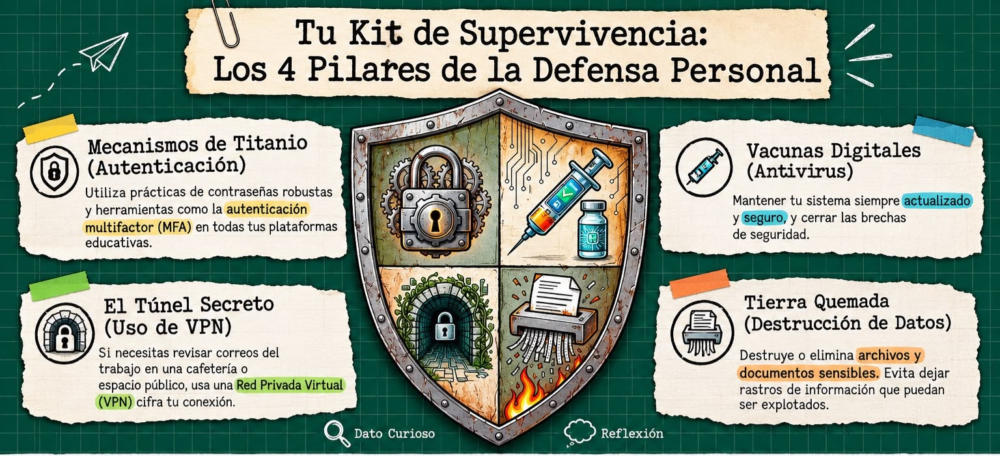

Guía Práctica e Interactiva para Docentes Exploradores del CBTis 166. Domina la ingeniería social, las amenazas de IA, los protocolos de defensa y la seguridad institucional.
Ir al Cuestionario de EvaluaciónUtiliza las flechas o desliza con el dedo/mouse para recorrer los temas. Da clic para ir al detalle.

Ingeniería social, phishing y manipulación psicológica en el entorno escolar.

Amenazas de Ransomware y Caballos de Troya ocultos en archivos cotidianos.

Ataques Drive-by, túneles DNS y errores críticos de configuración.

Phishing automatizado, malware autónomo y evasión de antivirus tradicionales.

Depredadores en línea, robo de identidad juvenil y vulnerabilidades móviles.

Amenazas internas por negligencia y riesgos en la cadena de suministro.

Evalúa tu higiene cibernética entre nivel de riesgo y nivel experto.

Los 4 pilares esenciales: MFA, vacunas digitales, VPN y destrucción segura.

Backups, cifrado, firewalls, IDS/IPS y planes de respuesta institucional.

Inteligencia artificial defensiva y neutralización autónoma en puntos finales.
Haz clic sobre cualquier imagen para verla en tamaño completo
Los hackers ya no solo rompen códigos complejos; manipulan la psicología humana. Usan pretextos sofisticados para que tú mismo les entregues las llaves de acceso.
🔍 Clic para agrandar
🔍 Clic para agrandar
🔍 Clic para agrandar
La Inteligencia Artificial está plenamente en manos de los cibercriminales para amplificar su efectividad:
🔍 Clic para agrandar
🔍 Clic para agrandar
🔍 Clic para agrandar
| Categoría | Mala Higiene (Riesgo) | Higiene Nivel Experto |
|---|---|---|
| Contraseñas | Riesgo Alto Usar "Profe1234" | Seguro Contraseñas robustas con MFA. |
| Actualizaciones | Riesgo Alto Posponer parches por meses. | Seguro Actualizaciones automáticas activas. |
| Redes y Archivos | Riesgo Alto Wi-Fi pública abierta sin protección. | Seguro Uso de VPN y destrucción segura de papel. |
🔍 Clic para agrandar
SentinelOne: Utiliza inteligencia artificial avanzada y aprendizaje automático para detectar patrones anómalos y bloquear variantes nuevas de malware de manera autónoma en milisegundos (aislando dispositivos y revirtiendo daños).
Tu Rol en el Ecosistema:
🔍 Clic para agrandar
Pon a prueba tus conocimientos sobre ciberseguridad avanzada, ingeniería social y defensa moderna.
Has completado la autoevaluación.